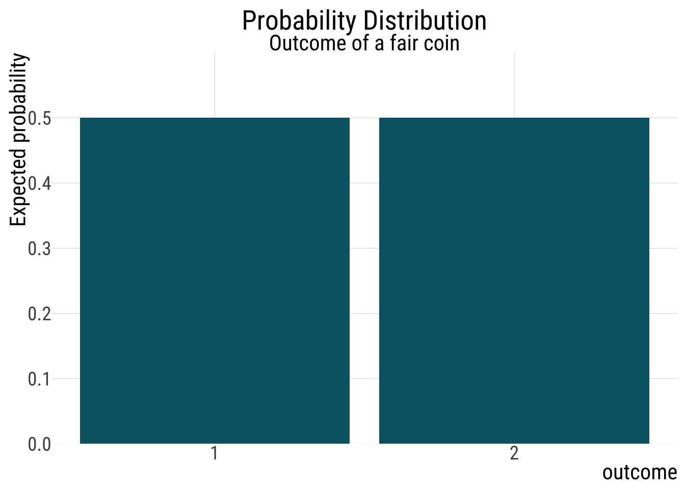
4.3.Estimation with Uncertainty
Keywords
Standard Error
Outline
- Go over the importance of the sampling distribution (again)
- Interactive activity to help with this
- Practice SEM calculations
Big Picture
Two key goals of inferential statistics:
estimate the characteristics of a population of interest based on a limited sample
hypothesis testing
Inferential Statistics
Is everything meaningless?
Q: If sampling error is unavoidable, how can I trust an estimate? What is its precision? Why measure anything anyway? HELP!!!!
. . .
A: if we know something about how the samping process might affect the estimates I get, that can inform my confidence in my estimates and the significance level in hypothesis testing.
Inferential Statistics
Q: Why do we need this?
A:
To learn about the whole population.
Test claims or hypotheses.
Make predictions with statistical models.
Calculate confidence intervals and p-values to measure uncertainty.
So there IS a way to deal with this uncertainty?
Q: How??
. . .
A: yes, young padawans. We use the sampling distribution – I know, panic not
The sampling distribution is at the heart of statistics
Q: But why do we need the sampling distribution?
A:
The Sampling Distribution
Let’s start from the very beginning. Consider the roll of a six-sided die.
This probability distribution shows all possible outcomes of a single die roll and how likely they are. I.e., in the long term, if you roll the die MANY times, you would expect equal proportions of each result.
What about a streak?
The sampling distribution can help us here.
The sampling distribution of a statistic is the distribution of that statistic, considered as a random variable, when derived from a random sample of size \(n\) .
It may be considered as the distribution of the statistic for all possible samples from the same population of a given sample size.
What does the sampling distribution depend on?
- the underlying distribution of the population (in the coin example, uniform)
- the statistic being considered (say, the number of sixes expected if I toss the coin a number of times)
- the sampling procedure employed
- the sample size used. (in this example, how many heads)
Example: possible outcomes of tossing a fair coin 20 times
One possible outcome leads to this histogram:
## Scale for x is already present.
## Adding another scale for x, which will replace the existing scale.
## Warning: Removed 2 rows containing missing values or values outside the scale range
## (`geom_bar()`).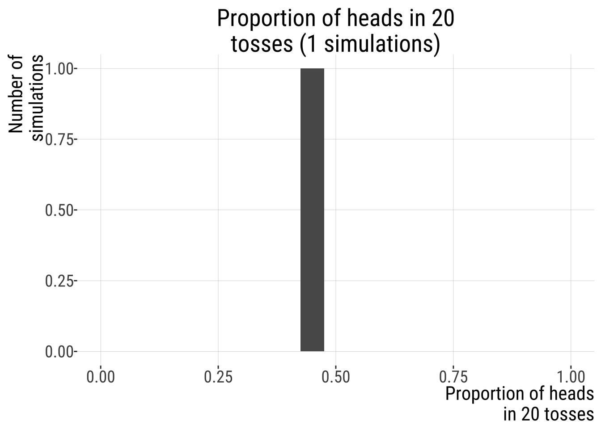
Repeat this process 10 times
## Scale for x is already present.
## Adding another scale for x, which will replace the existing scale.
## Warning: Removed 2 rows containing missing values or values outside the scale range
## (`geom_bar()`).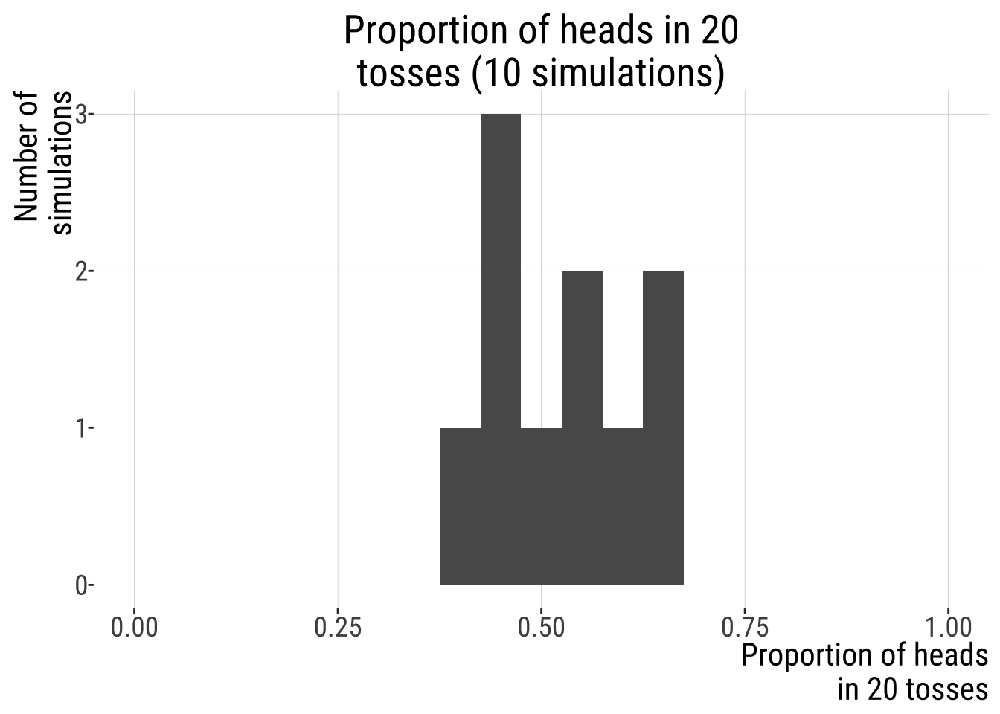
100 times
## Scale for x is already present.
## Adding another scale for x, which will replace the existing scale.
## Warning: Removed 2 rows containing missing values or values outside the scale range
## (`geom_bar()`).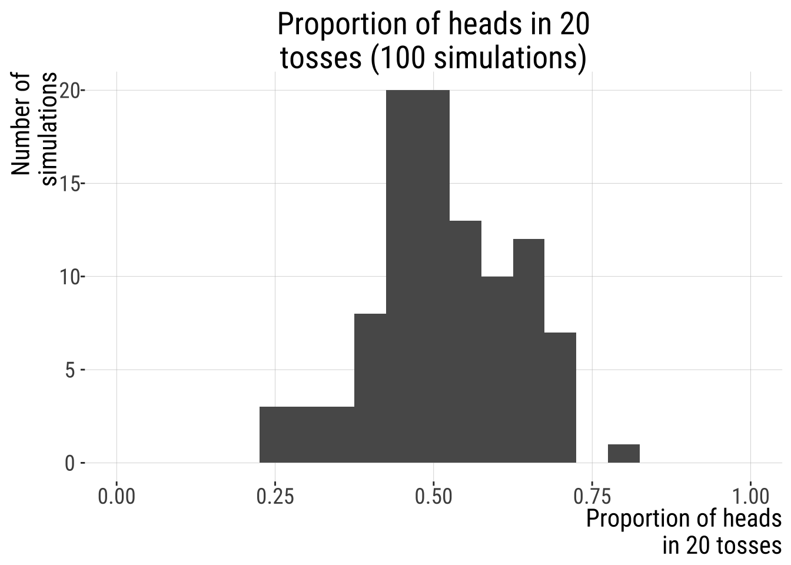
10000
## Scale for x is already present.
## Adding another scale for x, which will replace the existing scale.
## Warning: Removed 2 rows containing missing values or values outside the scale range
## (`geom_bar()`).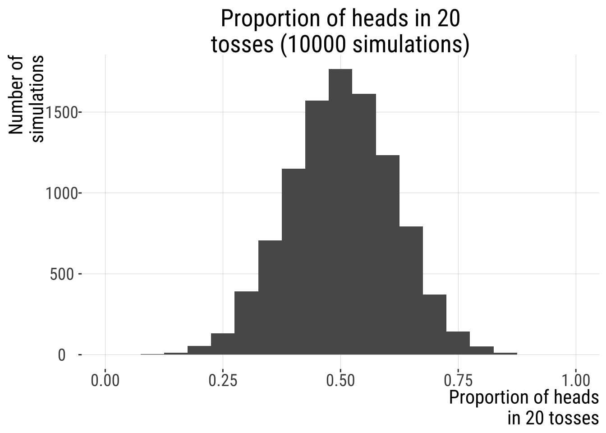
That was a sampling distribution (of a proportion)
Attention!
Population distribution
\[\neq\]
Sample distribution
\[\neq\]
SamplING distribution
Population distribution
In our previous example, we were interested in the lengths of human genes.
- Population distribution: contains all values (all human gene lengths). Here is the histogram
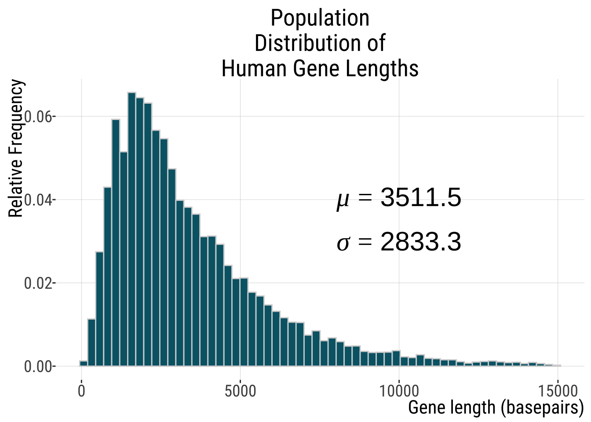
SamPLE distribution of gene lengths
Say, from one sample of 20 genes.
- the samPLE distribution will be based on the individual values of the individuals from my sample (in this case, 20 genes, sampled without replacement)
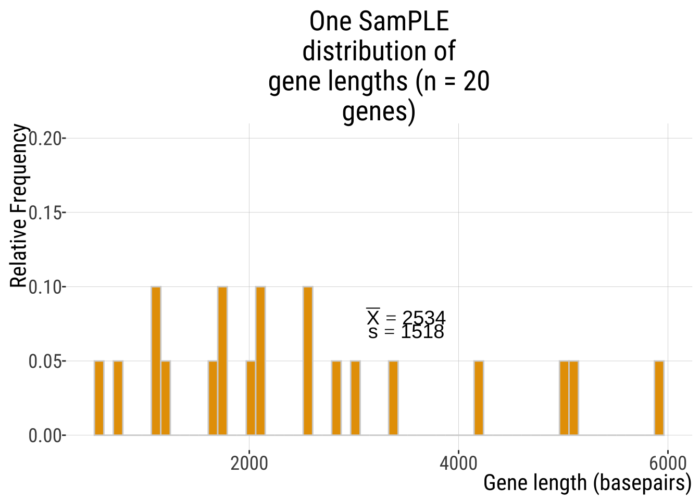
Another 20 genes sample
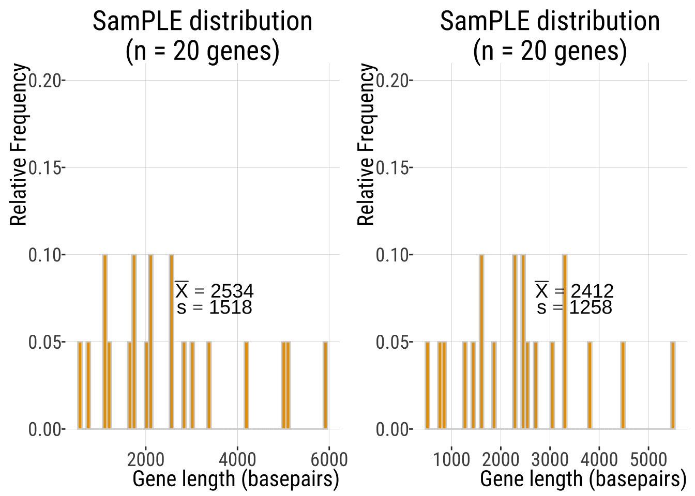
Another
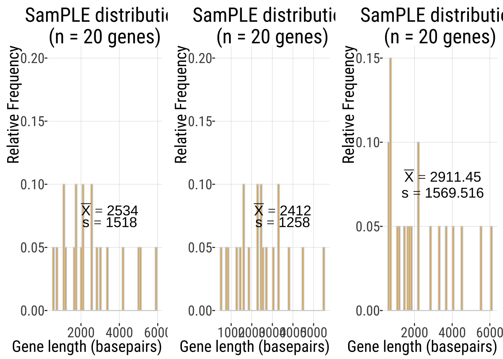
SampLING distribution
SampLING distribution
In this case, the samplING distribution of mean gene lengths.
We can start building this by collecting the individual samPLE means we calculated before: \(\bar{X}=\{3110.3,2412,2911.45,...\}\), and making a histogram of \(\bar{X}\)s.
## Adding missing grouping variables: `replicate`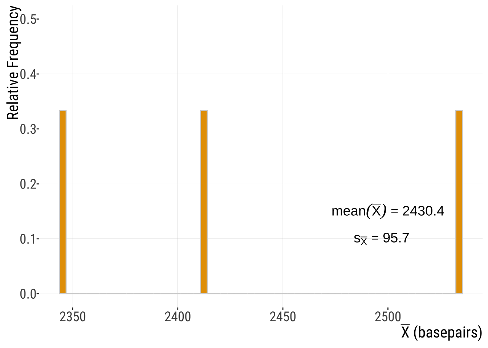
Increasing number of repetitions…
If instead of taking 3 independent samples of 20 genes we take, say, 100,000, we see a sampling distribution
## Adding missing grouping variables: `replicate`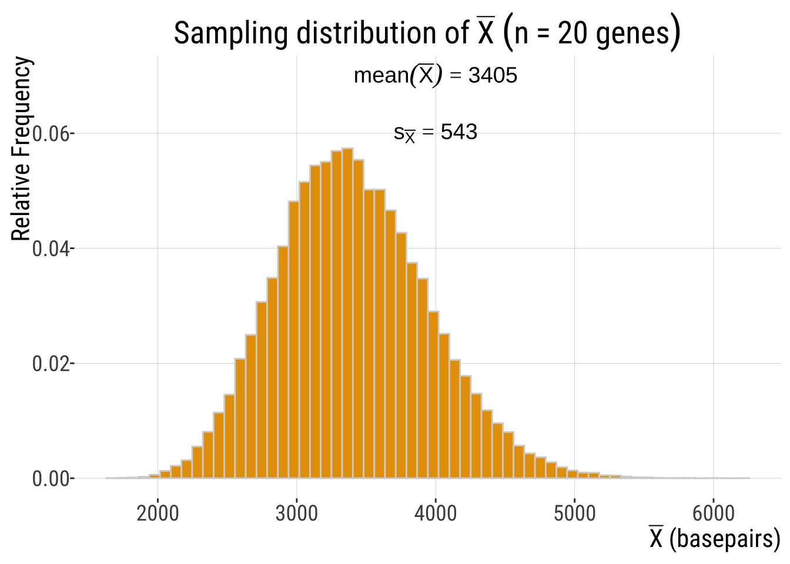
Compare
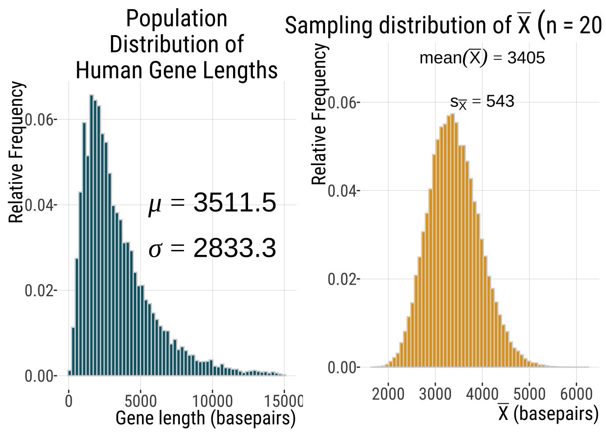
Grand mean of \(\bar{X}\) approaches population mean \(\mu\)
Standard Error of the mean (SEM)
Compare:
Parameter:
\(\sigma_{\bar{X}}=\frac{\sigma}{n}=\frac{2833.3}{\sqrt{20}}\approx 633.5\)
Estimates:
\(s_{\bar{X}}=543\)
estimated form the sampling distribution
\(SEM_{\bar{X}}=\frac{1517.998}{\sqrt{20}}\approx339.4\)
estimated from the first sample of 20 genes
Simulators to help you grasp this:
- http://shiny.calpoly.sh/Sampling_Distribution/
- https://shiny.abdn.ac.uk/Stats/apps/app_sampling/
- https://www.zoology.ubc.ca/~whitlock/Kingfisher/SamplingNormal.htm
SE Decreases with Sample Size
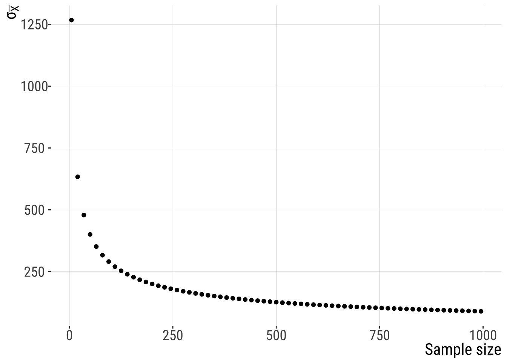
How we report SEM
\(\bar{X}\pm SE\)
In our previous example, our first sample had \(\bar{X}=2533.9\) and \(s_{X}=1517.998\), so \(SEM_{\bar{X}}=\frac{1517.998}{\sqrt{20}}\approx339.4\)
So we would report \(2533.9 \pm339.4 \text{ (SEM)}\). Later we will also see how the \(SEM\) is used in plots (error bars).
Standard error - Summary
- Estimates with smaller standard errors are more precise
- The smaller the sampling error, the less uncertainty there is about the target parameter in the population (“out there”).
- You can calculate the standard error for any estimate, not just the mean.
- The SE of the sample mean if sometimes referred to as SE, but this is ambiguous - use SEM instead of SE
- For huge sample sizes, the SEM is always tiny, even if the data have considerable spread (SD).
- Small samples underestimate the SD of the population
- Both SD and SEM are expressed in the same unit as the data
That’s all for today